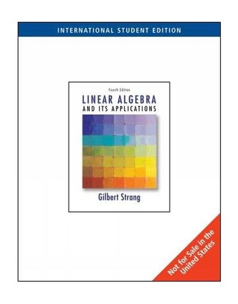

Teaching
2023 Outstanding Lecture Award
Communication System
2019 Fall, 2020 Fall, 2021 Fall, 2022 Fall (KNU, Undergrad) |
Information Theory
2020 Spring, 2021 Spring, 2022 Spring (KNU, Undergrad) |
Digital Communications and MIMO
 |
2020 Fall, 2021 Fall (KNU, Grad) |
Probability and Random Variables
2020 Spring, 2021 Spring, 2022 Spring (KNU, Undergrad) |
Linear Algebra
|  | 2024 Fall (Yonsei, Undergrad) |
Statistical Inference and Machine Learning
2022 Fall (KNU, Grad) |
Advanced MIMO
2023 Fall, 2024 Fall (Yonsei, Grad) |